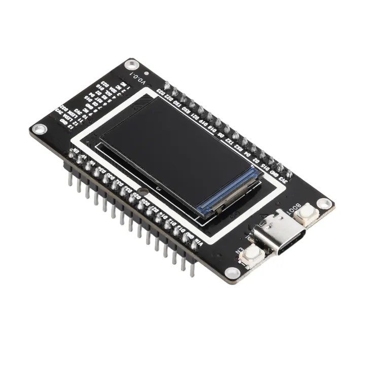
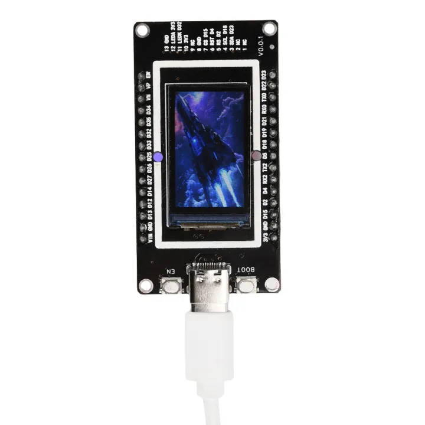
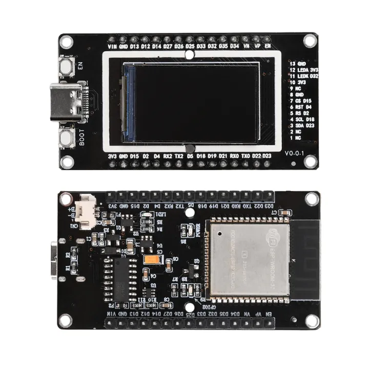
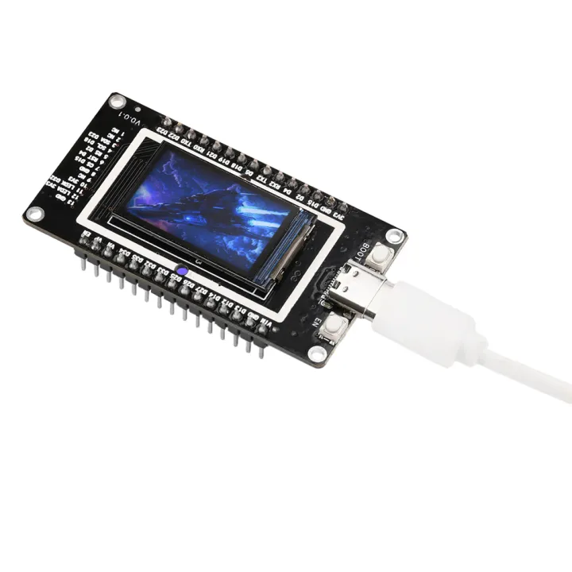
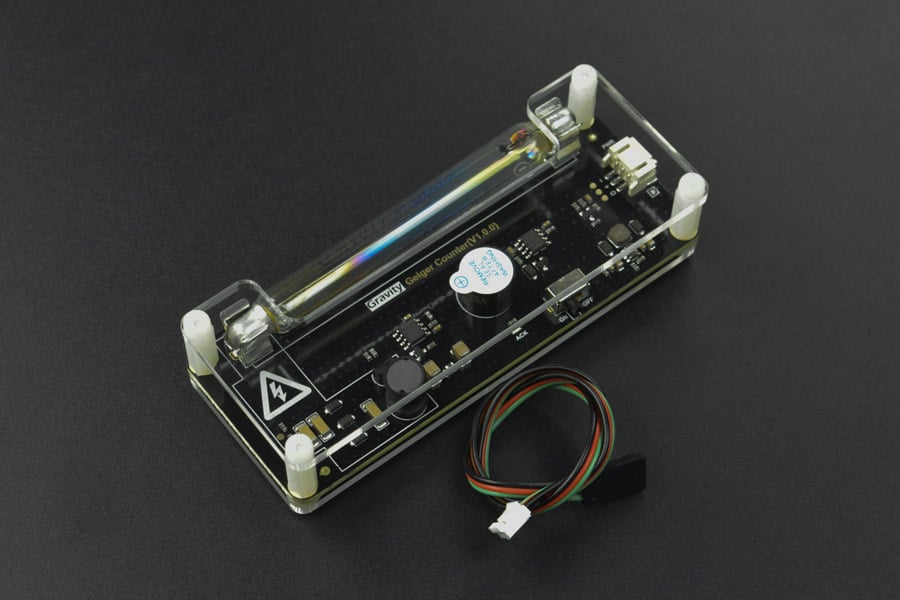
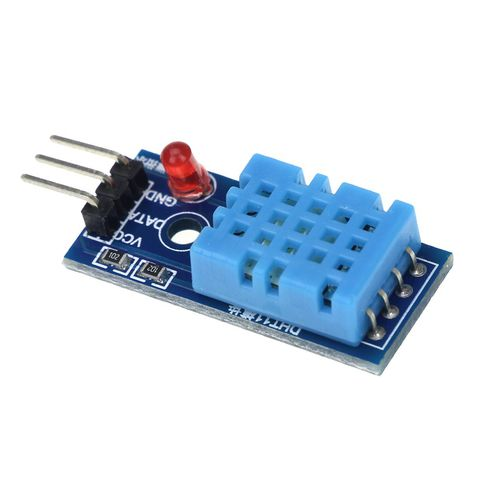

Thành Phần Phần Cứng
Khám phá các linh kiện điện tử cốt lõi tạo nên trạm quan trắc IoT.
Cấu Hình Các Trạm
Hệ thống bao gồm 3 phiên bản phần cứng khác nhau.

Trạm 1 & 2 (Tiêu Chuẩn)
ESP8266 + LCD 16x2
- MCU: ESP8266 NodeMCU
- Màn hình: LCD 1602 (I2C)
- Lib: LiquidCrystal_I2C
Trạm 3 (Nhỏ Gọn)
ESP8266 + OLED 0.96"
- MCU: ESP8266 NodeMCU
- Màn hình: OLED 0.96" SSD1306
- Lib: Adafruit_SSD1306




Trạm 4 (Nâng Cao)
ESP32 + TFT 1.9" Color
- MCU: ESP32 (Dual Core)
- Màn hình: TFT LCD 1.9" ST7789
- Cảnh báo: Màu sắc (Xanh/Cam/Đỏ)
ESP32/ESP8266
Bộ não của hệ thống
Vi điều khiển tích hợp Wi-Fi, chịu trách nhiệm thu thập dữ liệu từ các cảm biến, xử lý sơ bộ và gửi lên nền tảng AWS IoT Core một cách an toàn thông qua giao thức MQTT.
- Kết nối: Wi-Fi 802.11 b/g/n
- Giao thức: MQTT (TLS 1.2)
- Nguồn điện: 5V (qua cổng Micro USB)
- Ngôn ngữ: C++/Arduino

Cảm biến Phóng xạ (Ống Geiger-Müller)
Cảm biến chính
Sử dụng ống Geiger-Müller J305βγ để phát hiện các bức xạ ion hóa (tia Beta và Gamma). Mạch đi kèm sẽ đếm số xung (CPM - Counts Per Minute) và chuyển đổi thành suất liều tương đương (µSv/h).
- Loại ống: J305βγ
- Phát hiện: Tia Beta (β), Gamma (γ)
- Điện áp hoạt động: 380-450V (được tạo bởi module)
- Đơn vị đo: CPM, µSv/h

Cảm biến Nhiệt độ & Độ ẩm DHT11
Cảm biến môi trường
Cảm biến kỹ thuật số chi phí thấp dùng để đo nhiệt độ và độ ẩm tương đối của không khí xung quanh. Dữ liệu này cung cấp bối cảnh môi trường cho các phép đo phóng xạ.
- Dải nhiệt độ: 0-50°C (độ chính xác ±2°C)
- Dải độ ẩm: 20-90% RH (độ chính xác ±5%)
- Giao tiếp: 1-Wire
Kiến trúc Phần mềm & Luồng Dữ liệu
Mô hình tổng quan về cách dữ liệu được thu thập, xử lý và hiển thị.
1. Thiết bị Nhúng
ESP32 đọc dữ liệu từ cảm biến và gửi qua MQTT.
2. AWS IoT Core
Tiếp nhận và xác thực tin nhắn MQTT một cách an toàn.
3. AWS Lambda
Được kích hoạt bởi IoT Rule để xử lý và lưu trữ dữ liệu.
4. Amazon DynamoDB
Lưu trữ dữ liệu chuỗi thời gian hiệu suất cao.
5. API Gateway
Tạo REST API để frontend có thể truy vấn dữ liệu.
6. Giao diện Web
Trực quan hóa dữ liệu bằng biểu đồ và đồng hồ đo.